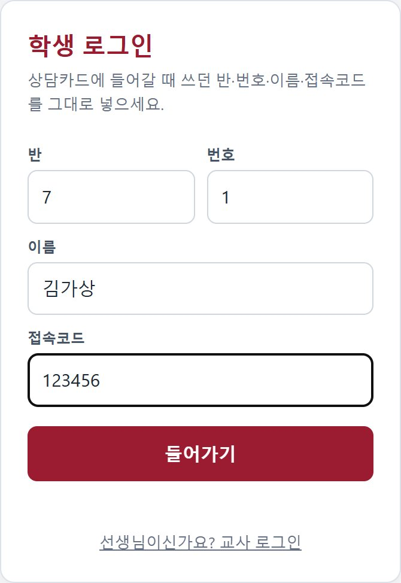
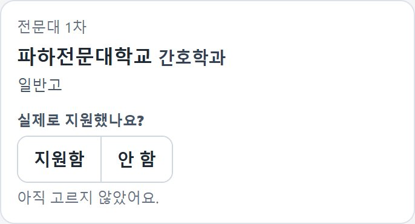
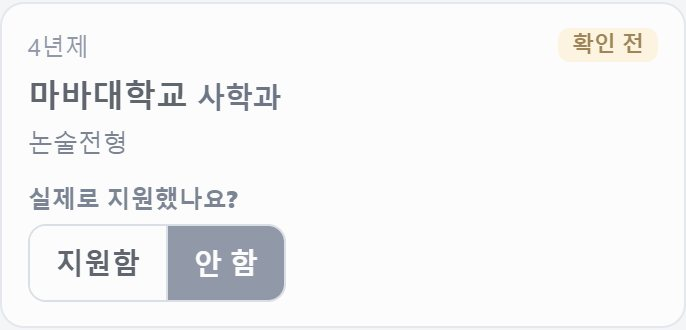
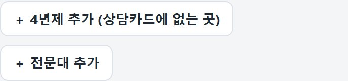
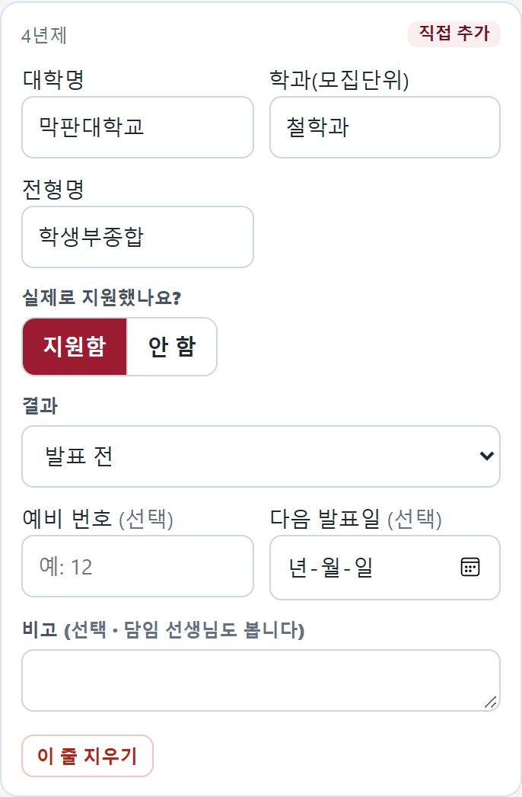
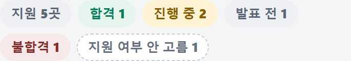
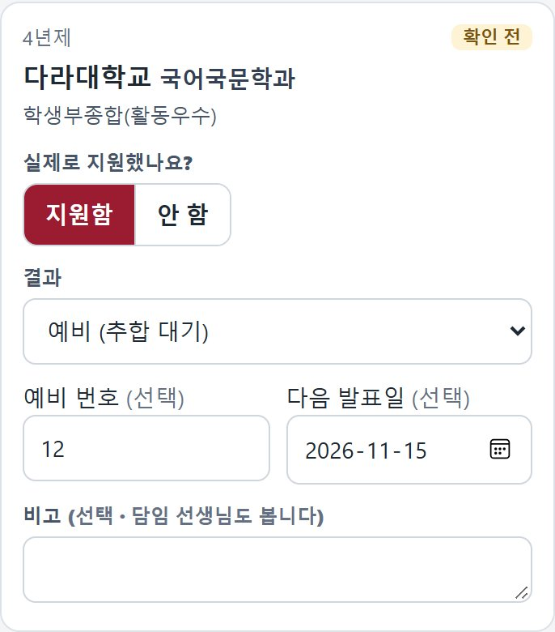
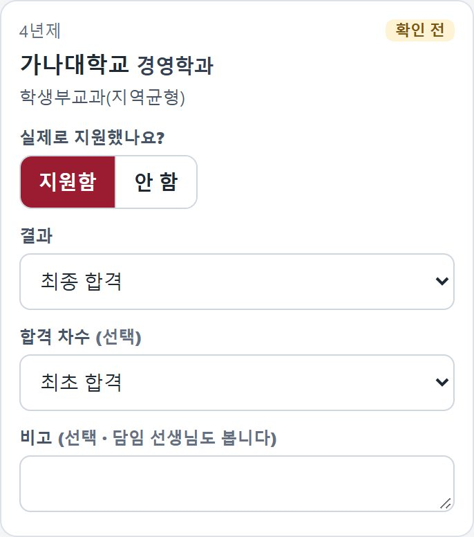
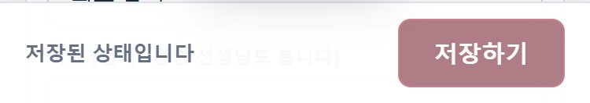
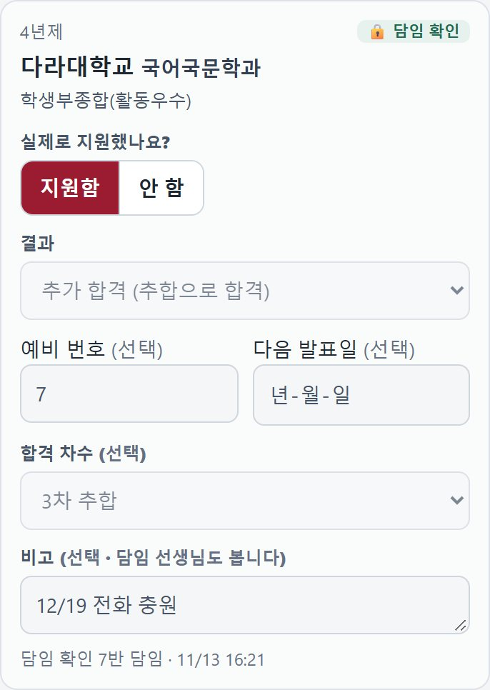

1들어가기
담임 선생님이 보내 준 주소를 열면 학생 로그인이 나와요. 상담카드에 들어갈 때와 똑같은 반·번호·이름·접속코드를 넣고 들어가기를 누르세요.
같은 휴대폰으로 최근에 상담카드에 들어갔다면 로그인 없이 바로 열릴 수도 있어요.

예시 화면 — 가상 학생
접속코드를 모르면 담임 선생님께 물어보세요. 접속코드는 친구에게 알려 주지 마세요. 다른 사람이 내 결과를 바꿀 수 있어요.
2원서 낸 곳 고르기
상담카드에 적은 대학이 4년제 대학·전문대학으로 나뉘어 미리 나와 있어요. 대학마다 실제로 지원했나요?에서 고르세요.
- 원서를 냈으면 지원함 → 결과 칸이 열려요.
- 상담카드에는 적었지만 내지 않았으면 안 함

아직 고르지 않은 줄

‘안 함’을 고른 줄
상담카드에 없는 곳에 냈다면 (막판에 바꾼 곳)
맨 아래 ＋ 4년제 추가 (상담카드에 없는 곳) 또는 ＋ 전문대 추가를 누르고 대학명 · 학과(모집단위) · 전형명을 적어요. 전문대는 모집시기(수시1차·수시2차)도 고르세요. 잘못 넣은 줄은 이 줄 지우기로 지워요.

맨 아래 추가 단추

직접 추가한 줄
다 골랐는지 확인
화면 위 요약에 지원 여부 안 고름이 보이면 아직 안 고른 대학이 남은 거예요. 다 고르면 이 칸이 사라져요.

4년제 ‘지원함’이 7곳 이상이면 경고가 떠요. 4년제 수시는 6회까지 지원할 수 있어서(과학기술원·사관학교 등은 제외), 실제로 원서를 낸 곳만 ‘지원함’으로 남겨 주세요.
3결과 고르기
결과 칸에서 지금 상태를 고르세요. 처음에는 ‘발표 전’이에요.
발표 전아직 발표가 나지 않았어요.
진행 중
1차 합격 (2차·면접 남음)1단계를 통과했고 면접·2차가 남았어요.
예비 (추합 대기)예비 번호를 받았어요. 예비 번호와 다음 발표일을 알면 적어 주세요.
합격
최종 합격최종 합격했어요.
추가 합격 (추합으로 합격)예비였다가 추가 합격(충원)됐어요.
불합격
1차 불합격1단계에서 떨어졌어요.
2차 미응시 (1차 합격 후 응시 안 함)1차는 붙었지만 면접·2차에 가지 않았어요.
최종 불합격 (일괄 불합격·2차 후 불합격)단계 없이 한 번에 떨어졌거나, 면접·2차를 보고 떨어졌어요. 예비였다가 끝내 추합되지 않았을 때도 이걸로 바꿔요.
예비일 때 — 예비 번호 · 다음 발표일
둘 다 선택이에요. 알면 적어 두세요. 담임 선생님이 추합 일정을 날짜순으로 챙겨 봐요.

예비 12번, 다음 발표일을 적은 예
합격일 때 — 합격 차수
합격 차수도 선택이에요. 최초 합격, 1차 추합 … 10차 이후 추합, 전화 추합 중에서 골라요. 모르면 비워 둬도 돼요.

최종 합격 · 최초 합격의 예
비고는 선택이고, 담임 선생님도 봐요.
4저장하기
고친 것이 있으면 화면 맨 아래에 저장하지 않은 변경이 있어요가 떠요. 저장하기를 누르세요.
저장된 상태입니다로 바뀌면 끝이에요. 저장은 5~10초쯤 걸려요.

이것만 기억하세요
- 단추가 저장 차례를 기다리는 중…으로 바뀌면 친구들이 한꺼번에 저장하는 중이에요. 다시 누르지 말고 기다리면 저절로 저장돼요.
- 저장하기 전에 창을 닫으면 고친 내용이 저장되지 않아요.
5발표가 날 때마다
결과는 한 번에 끝나지 않아요. 바뀔 때마다 들어와서 고치고 저장하기를 누르세요.
1차 합격 → 최종 합격 (또는 최종 불합격 · 2차 미응시)
예비 12번 → 추가 합격 + 합격 차수 ‘2차 추합’
예비 → 끝내 추합되지 않으면 최종 불합격
앞서 저장한 내용은 그대로예요 · 다시 들어오면 저장해 둔 결과가 그대로 나와요. 상담카드에 적은 내용은 이 화면에서 바뀌지 않아요.
6🔒 담임 선생님이 확인한 줄
담임 선생님이 확인한 줄에는 🔒 담임 확인이 붙고 잠겨서 바꿀 수 없어요. 확인을 기다리는 줄에는 확인 전, 담임 선생님이 대신 넣어 준 줄에는 담임 입력이 붙어요.

잠긴 줄은 회색으로 보여요
잠긴 줄이 틀렸거나, 확인 뒤에 결과가 바뀌었으면(예: 예비 → 추가 합격) 담임 선생님께 말씀드리세요.
이럴 때는
- 로그인이 안 돼요.
- 반·번호·이름을 상담카드에 들어갈 때와 똑같이 넣었는지 보세요(이름 띄어쓰기도). 그래도 안 되면 담임 선생님께 접속코드를 확인하세요.
- “지금은 담임 선생님이 결과를 입력합니다”가 보여요.
- 학교에서 학생 입력을 꺼 둔 상태예요. 화면은 보기만 할 수 있어요. 결과가 나오면 담임 선생님께 알려 주세요.
- “담임 선생님이 먼저 바꾼 내용을 불러와, 내가 입력한 내용과 합쳤습니다”가 떠요.
- 그사이 담임 선생님이 내 결과를 고쳤어요. 내가 입력하던 내용은 남아 있으니 화면을 확인하고 저장하기를 한 번 더 누르세요.
- “로그인이 만료되었습니다. 다시 로그인하세요.”가 떠요.
- 다시 로그인하면 돼요. 이미 저장한 결과는 그대로예요. 저장하지 못한 내용만 다시 넣으세요.
- 학교·도서관 컴퓨터로 입력했어요.
- 다 쓰면 오른쪽 위 로그아웃을 누르세요. 다음 사람이 내 결과를 바꿀 수 없게요.
- 친구 결과도 보이나요?
- 아니요. 내 결과만 보여요. 담임·진학 선생님이 학생별로 모아 봐요.
- 정시 결과도 넣나요?
- 이 화면은 수시용이에요(4년제 수시, 전문대 수시 1·2차).